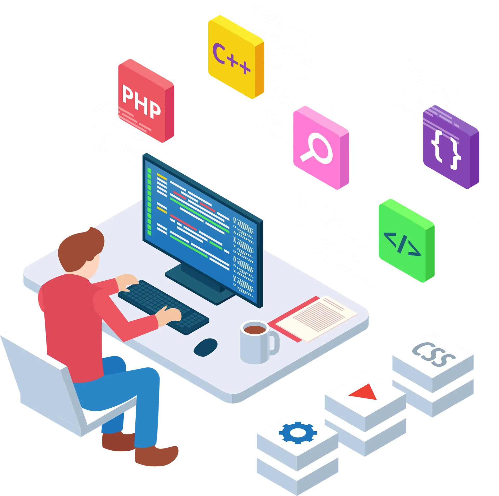
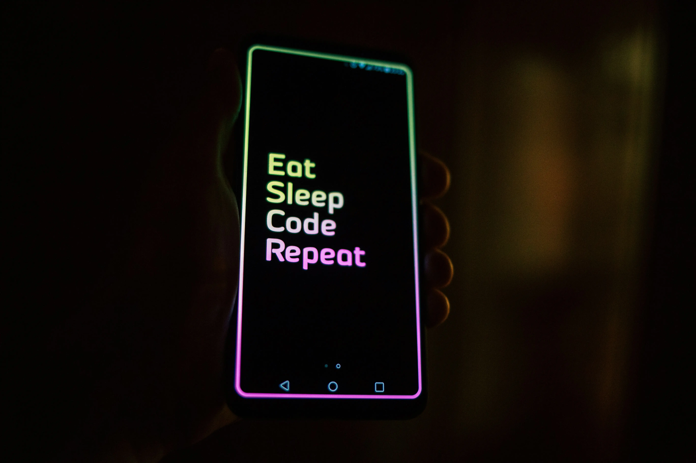

Languages
- Elixir
- Go
- Python
- JavaScript
- SQL
- C++
I'm a Computer Systems Engineering student at UNIR México and a software development intern, where I work on production systems with Elixir, Phoenix and LiveView, as well as Python, Vue.js and Go. I came from studying Physics at UNAM, and I brought along the habit of not trusting a decision until I can measure it. I'm drawn to systems that have to stay correct under load: concurrency, data processing at scale, and APIs that don't fall over.
Download CV

I started out studying Physics at UNAM. That's where I learned to model problems, to measure, and to distrust any result I can't reproduce. It's the same way I work now that I write software.
I'm currently studying Computer Systems Engineering at UNIR México and working as a software development intern at a consultancy, where I work on production systems: Elixir with Phoenix and LiveView on the server side, Python or Vue.js, and Go depending on what the project calls for.
My recent projects are about data systems and concurrency: processing millions of rows without loading them into memory, spreading load across shards, guaranteeing that one client never sees another's data. In all of them I back decisions with my own benchmarks rather than taking someone's word for it.
Every figure here comes from my own benchmark on the project's real dataset, and is documented in the repository alongside the decision it justifies.
Validates 50 million remittance transactions against the published fee schedule of five providers, using a worker pool in Go. It streams a 4.24 GiB file without ever holding it in memory, and writes out only the rows a human has to review. Idempotency is verified byte for byte: two runs over the same input produce identical output.
A CSV, JSON and LOG file processor built with Elixir and Phoenix. It began as a
web app with the classic "wait and redirect" flow and grew into a reactive
dashboard powered by LiveView and Phoenix.PubSub: results show up as they are
produced, with no reload. Each batch can run sequentially or in parallel over
Elixir's lightweight processes, with a benchmark that races both modes live, and
spawn_monitor so a crashing worker doesn't take the system down.
A data system for a short-text social network in the vein of Twitter/X, solving
three tensions at once: distributed writes, timelines under 500 ms, and celebrity
accounts that don't wreck a shard. The sharding key is
hash(user_id) % 4, which avoids the write hot spot that range
partitioning creates. Fan-out is hybrid: on-write for ordinary accounts, on-read
for celebrities, with SQLite and WAL per shard and DuckDB for cross-shard
analytics.
900,000 transactions · 22,806 rows/s
Validates US → LATAM remittances against each provider's published fee schedule and sorts them into ok, flagged or quarantine. A worker pool built on goroutines and channels, clean under Go's race detector.
45 nodes · 8 countries
A parcel network with atomic transfers between nodes, reconciliation for nodes coming back from offline, and proactive detection of packages at risk of missing their SLA. The test suite is verified by mutation: deliberate faults are injected to confirm the tests actually catch them.
10.6 M events · 40 organizations
Video-call quality monitoring and billing for 40 client organizations. Two engines matched to their workloads: DuckDB for telemetry, SQLite for billing. Tenant isolation is held up by 16 adversarial tests that try to cross the boundary and fail in the attempt.
These are where I started, back when I was studying Physics and teaching myself web development. I keep them because they show where I came from.